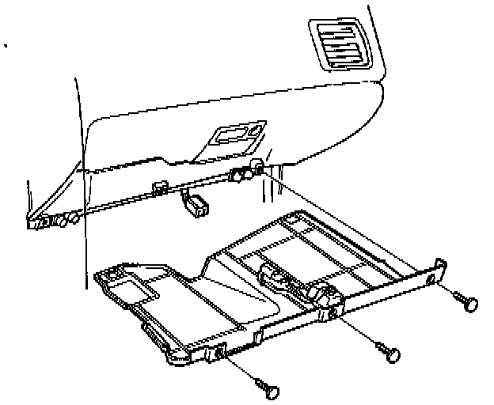
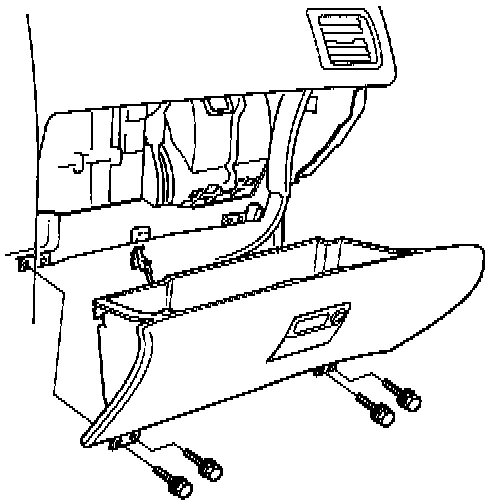
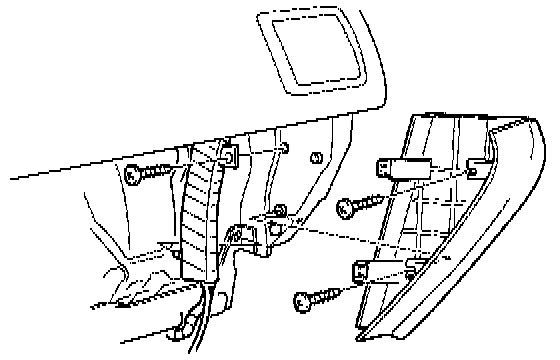
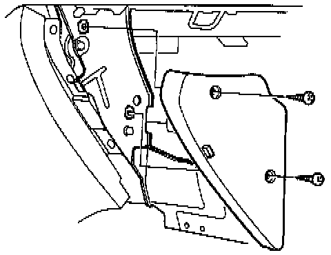
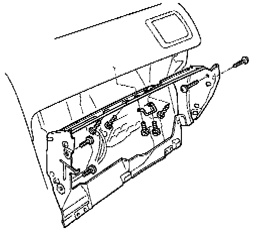
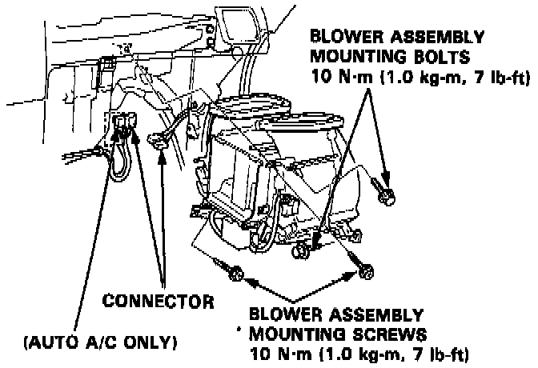
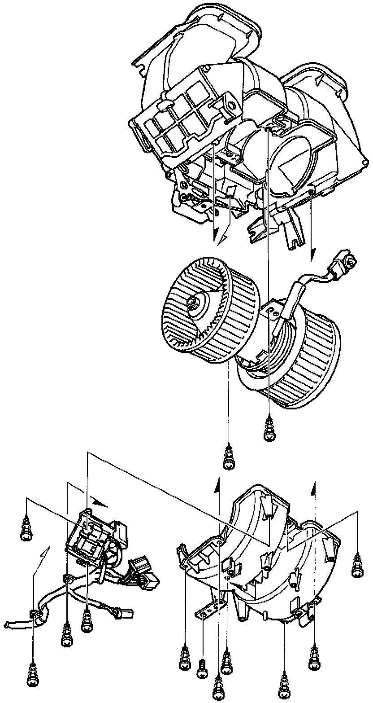

Fresh Air/Recirculation Control Box
BLOWER ASSEMBLY REPLACEMENT
1. Remove the dashboard lower panel and disconnect the connector from it.

2. Disconnect the glove box light connector and glove box mounting bolts then remove the glove box.


3. Remove both dashboard side end caps.

4. Remove the glove box frame mounting bolts and nuts, then remove the glove box frame.

5. Disconnect the connectors as shown.
6. Remove the blower mounting bolts and screws, then remove the blower.
7. Install the blower in the reverse order of removal, then make sure it runs and doesn't leak any air.
BLOWER ASSEMBLY OVERHAUL

Refer to image for blower assembly overhaul and blower motor replacement.